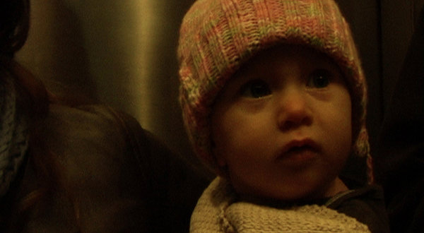

-
Sketches from Life: Jonas Mekas’s Sleepless Nights Stories
by Aaron Cutler December 19, 2011
Jonas Mekas, Sleepless Night Stories, 2011
An old man takes us into his apartment one night. The floor is still covered with cardboard moving boxes. “My life is boxes,” he says. “I’m boxed myself, and I don’t know where I am.” As he wanders this home that isn’t home yet, he reveals he has a problem: He can’t sleep.
The man is Jonas Mekas, and Sleepless Nights Stories is his film. The Lithuanian immigrant who arrived in Williamsburg in 1949 from a displaced persons camp has made his life in New York ever since. When he was younger he was slim, with black whip-like hair, an arrogant profile, a confident stride. Now he looks wrinkled, with stooping posture, graying hair, protruding moles, and a round belly. He never leaves the house without a hat on.
Sleepless Nights Stories only shows Mekas in the present. When he was younger he was slim, with black hair, an arrogant nose, and a sure, confident stride. We know what he used to look like because he has been filming himself for most of his life. Shortly after he landed in New York with his brother Adolfas, he bought a Bolex and began documenting his own life. In time he edited the home movies into longer and longer works, with seasons and even years jumping from one cut to the next. Mekas, in voice-over, would mourn time while it was passing, so that the films felt like living memories. Their titles summed up his sense of himself as a Romantic, going forward by looking back: Reminiscences of a Journey to Lithuania; Lost, Lost, Lost; As I Was Moving Ahead Occasionally I Saw Brief Glimpses of Beauty. No matter who was onscreen, Mekas felt like the protagonist. The movies played as subjective cinema in that, however direct and immediate an image seemed at first, you always felt it filtered through somebody’s consciousness.
Many readers know Mekas as the founder of New York’s Anthology Film Archives, a preservation and exhibition center for the avant-garde (and, not coincidentally, the site at which Sleepless Nights Stories will play its U.S. premiere run). But he’s also a pioneer of what’s best known as the diary film. The subject in almost all of his diaries, notes, and sketches has been not just himself but mortality, sometimes directly (footage from a friend’s funeral), sometimes indirectly (shots of trees in springtime, with inklings of a coming winter). Sleepless Nights Stories, too, considers loss, and finds a celebration of life in it.
It does so by stripping people to essentials. The road to happiness travels through despair. A fellow traveler talks to Jonas inside a dark, crowded café. Her eyes hang exhausted from late nights and tears. It’s the artist Marina Abramović, or a single woman. Domestic life is her dream, she says, but “Real life: I can’t do it.”
Jonas Mekas, Sleepless Nights Stories, 2011
Similarly, Mekas is never introduced as a poet, curator, or filmmaker; what we’re left with is a man. A man alone. Soon after the bar scene, Mekas, offscreen, describes his insomnia to friends and longtime couple Ken and Flo Jacobs, who sit together and nod in near-unison. Their calm solidarity contrasts with his solitary torment, and the ambivalence a single person can easily feel when in the company of married peers shines through.
A potential reason for our man’s insomnia is solitude, which he solves with company. The film settles into scenes of friends, late at night, sharing themselves, often with wine’s aid. Sometimes, as in the story of Lee (sweet handwritten title cards introduce a new soul), a person tells a little real-life fairy tale, of overcoming drugs with somebody’s help and then helping that person in turn; sometimes, as in the story of Phong Bui, a person speaks more generally about existential concerns. With each visitation, our hero lightens and loosens.
In his earlier 16mm films, Mekas narrated in voiceover, philosophizing on what made a moment precious; here he lets the direct sound from his digital camera stand, so that everyone speaks in their own voices, and together give the film its title. These are many peoples’ sleepless nights, and many stories. When lonely people commune, the film suggests, together they grow less lonely.
Lonely people communing can also describe the experience of moviegoing, which has been characterized more than once as collective dreaming. Mekas shares himself with his characters, and so, at the same time, shares himself and all of them with viewers. We get the sensation of eavesdropping on the group, or even joining it, and passing the night together. If we like, we can even do so on a level plane.Although many of Mekas’s friends are celebrities, they’re seen driving cars, or sitting at tables: the mundane stuff of everyday life. For the film’s purposes, these are just the people he knows.
He loves them, it’s clear, and much of the film’s pleasure comes from the excitement of sharing love. A chubby, wide-eyed man (who, for those interested, is Harmony Korine) cries, “Jonas, Jonas, this is my fiancée Rachel, Jonas!”; after a freeze, we see them two years later, married; and then, after another freeze, he holds their newborn son. These moments pass quickly, but the way in which they’re captured — the frozen Rachel, the “Two Years Later” sign — are heart-stopping. It’s as though, in a minute, you’ve shared in several lives.
Jonas Mekas, Sleepless Nights Stories, 2011
Sleepless Nights Stories deals more directly with the present than perhaps any other film that Mekas has made. In previous work, Mekas memorialized dead friends with their images; here he speaks about them directly, whether Amy Winehouse or the late, great filmmaker Marie Menken. He’s speaking for them just as he speaks at other times for trees and animals, doing all the talking for creatures that can’t talk for themselves — while also, rather blatantly, speaking for himself. His monologues are long-winded, rambling, disorganized, incoherent, and wonderful. Because he delivers them in a loving spirit, they can’t help but charm.
Mekas’s stated inspiration for Sleepless Nights Stories was the Arabian Nights, and like those infinitely told and retold tales, it plays on the imagination in multiple ways, with the figure of the storyteller as the most common thread. For all his discourses, Mekas also knows when to get out of the way. At the end of his Menken memorial — she made little, simple films about life, he says, and captured beauty and gentleness — the camera points up, out a window, and a burst of light floods in. Meanwhile, his son Sebastian and another young man play a Lithuanian folk tune.
Lithuania looms large throughout this film, as it has throughout Mekas’s others, and more than a few times the old man’s insomnia syncs up with a line from his 1976 film Lost, Lost, Lost: “You will never know what a displaced person thinks, in the evening and in New York.” All the bursts of joy this film permits can’t escape its undercurrent of melancholy. Sixty years on, and he’s still a displaced person. “Lithuania in general is lyrical,” he says, and you understand from listening how much he’d like to be there.
A few years ago, Mekas wrote in an article that he was “Straying away into the completely personal, small, where everything begins and ends.” That describes this movie, which finally finds a lost Lithuania in the gently blowing leaves of a New York park. When he returns to the apartment at film’s end, still awake, but with his heart full of stories, the old man can look around his home and see the world. Each box contains a memory, and the mere act of remembering can give a person boundless joy.

Leave a Comment